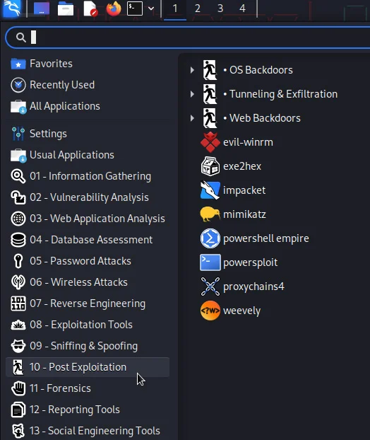

Czym jest Kali? 
Kali Linux to dystrybucja systemu operacyjnego Linux, zaprojektowana głównie z myślą o testach penetracyjnych i audytach bezpieczeństwa. Zawiera szereg narzędzi wykorzystywanych przez specjalistów ds. bezpieczeństwa do przeprowadzania testów na systemach komputerowych, takich jak skanowanie podatności, łamanie haseł, analiza sieci czy inżynieria wsteczna.
Jakie daje możliwości?
Kali Linux to potężne narzędzie w rękach specjalistów od cyberbezpieczeństwa i hakerów. To system, który daje dostęp do setek narzędzi wykorzystywanych w testach penetracyjnych i atakach. Oto jego możliwości:
- Exploitation: Narzędzia do wykorzystywania odkrytych luk w systemach, takie jak Metasploit i Armitage.
- Password Cracking: Aplikacje do łamania haseł, jak Hashcat, John the Ripper czy Hydra.
- Network Hacking: Programy do podsłuchiwania ruchu sieciowego, łamania zabezpieczeń Wi-Fi (Aircrack-ng), czy przechwytywania danych (Wireshark).
- Phishing: Tworzenie fałszywych stron internetowych i emaili do wyłudzania danych (Social-Engineer Toolkit).
- Reverse Engineering: Analiza i manipulowanie oprogramowaniem, w tym dekompilacja aplikacji i analiza złośliwego kodu.

Zagrożenia
Przykłady niebiezpiecznych narzędzi z wykorzystaniem Kali Linux'a
BeEF
Narzędzie do testów penetracyjnych, które służy do oceny bezpieczeństwa przeglądarek internetowych. BeEF umożliwia atakującemu kontolę i zbieranie informacji z docelowego systemu.
Strom-Breaker
Również narzedzie do testów penetracyjnych, jednakże oferujące więcej możliwości sprawdzania bezpieczeństwa, narzędzia dostępne w panelu mają wielką moc w odpowiednich rękach.